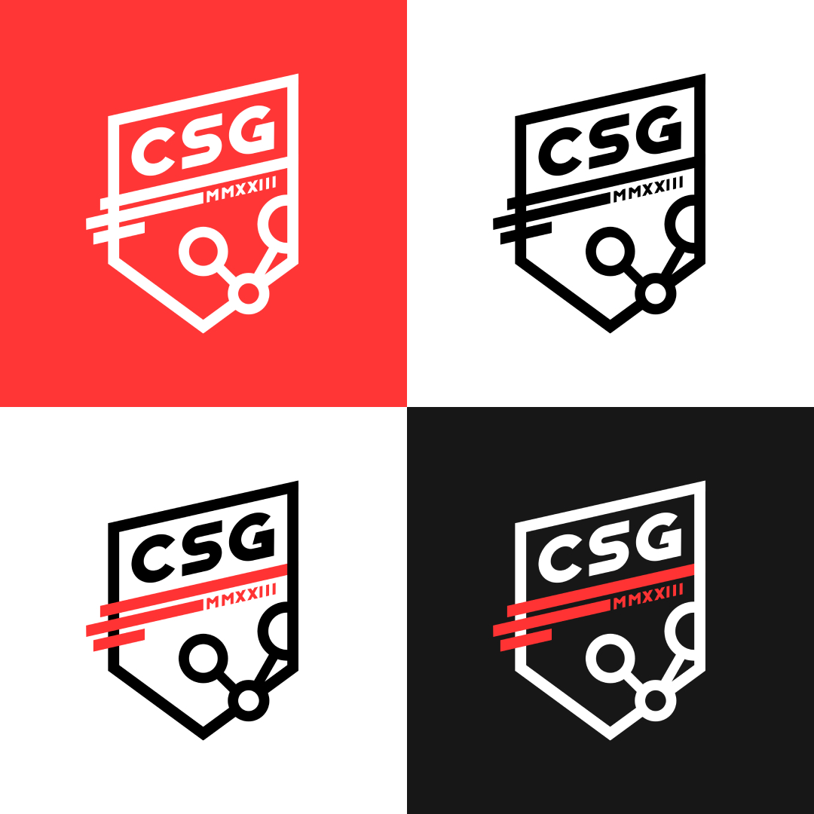
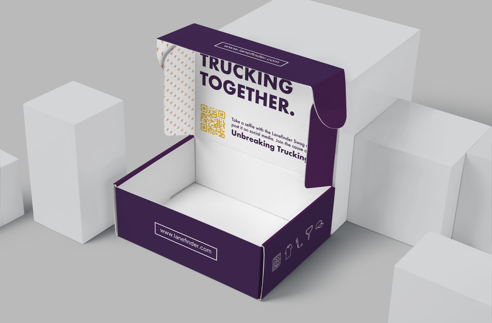
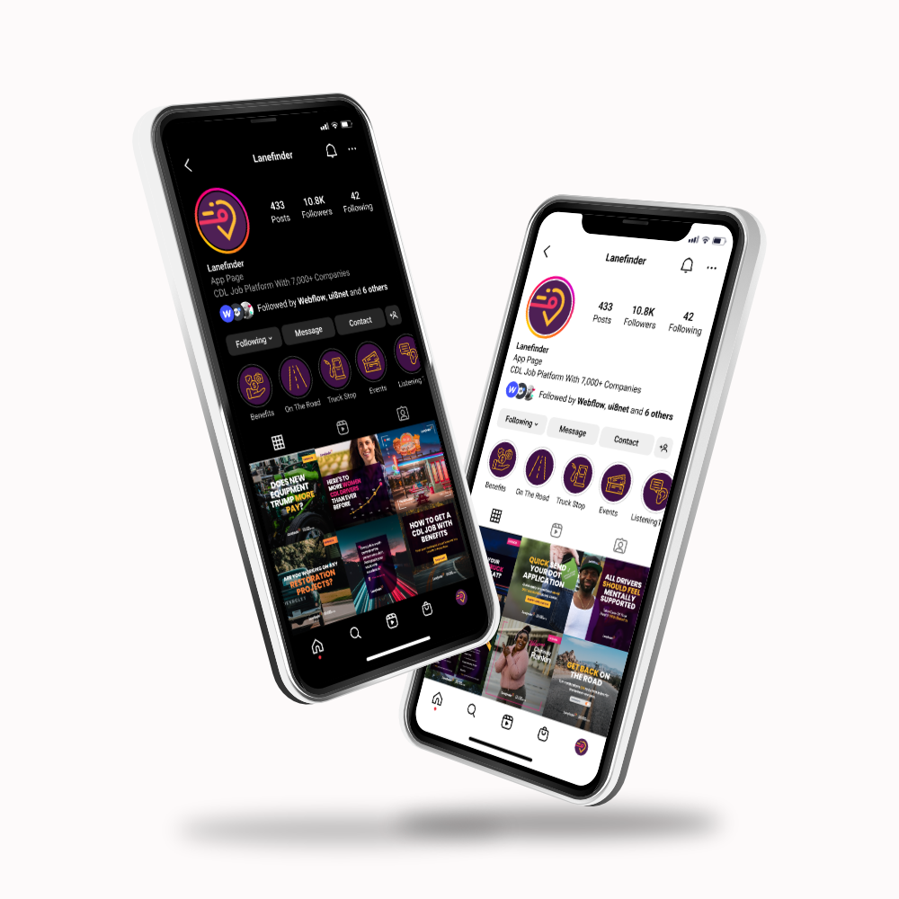
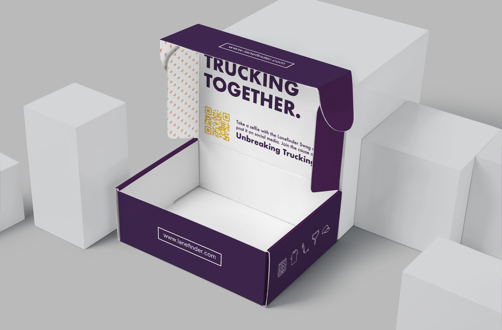
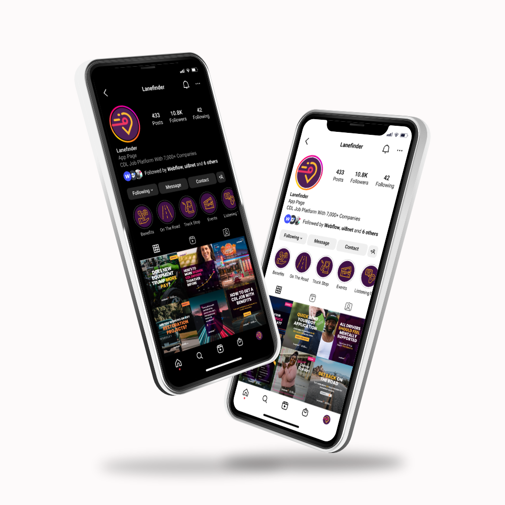
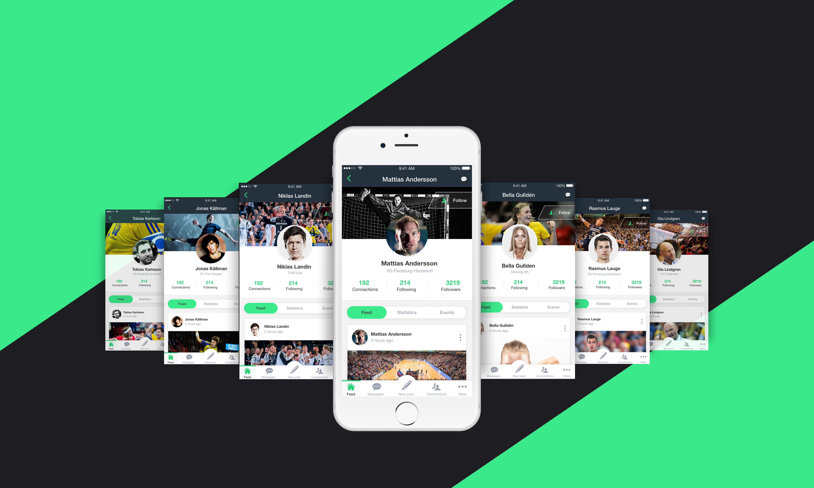
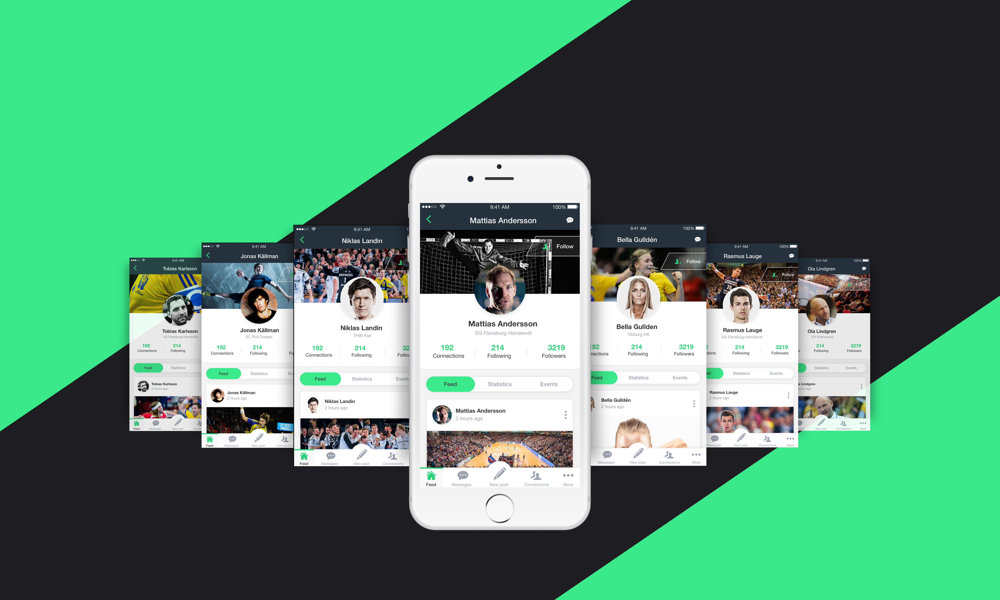
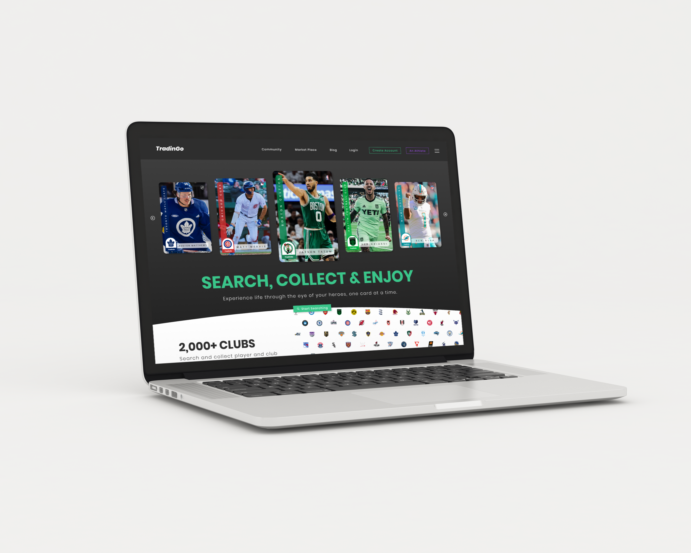
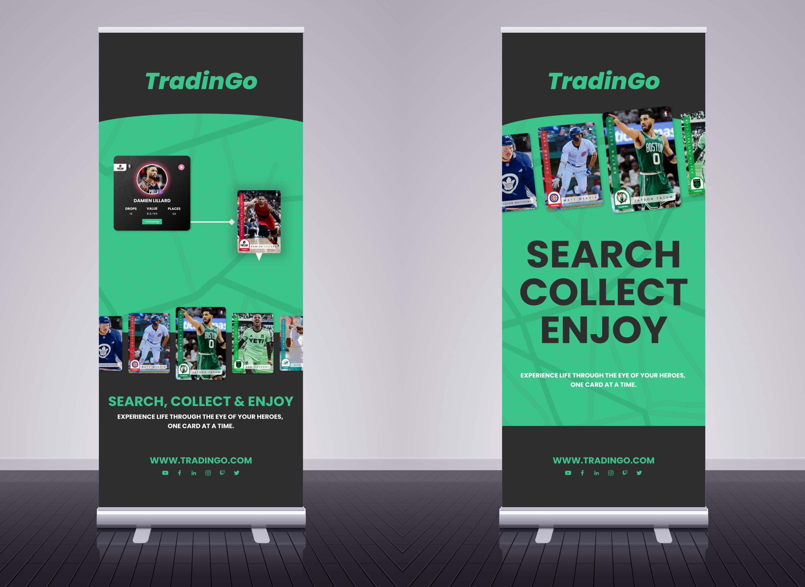
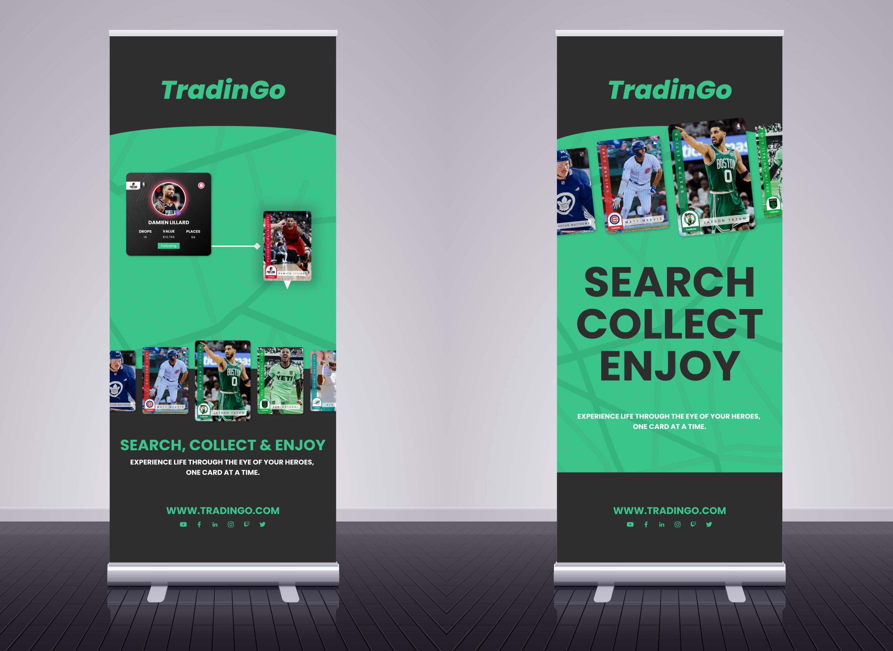

RehMedia
Connect Sports Group
Connect Sports Group was founded to give the forgotten footballers the opportunity to access professional support services that are normally only available to the Pros.
Lanefinder.com
Lanefinder.com is a specialized job platform designed exclusively for the trucking industry, aimed at connecting truck drivers with quality employment opportunities. The platform addresses the unique challenges faced by both drivers and trucking companies, providing a streamlined and transparent job search experience.
 




Key Features
Tailored Job Search: Lanefinder offers an intuitive job search experience, allowing drivers to filter opportunities based on their specific needs, such as location, experience, and job type. This ensures that users can quickly pinpoint the most suitable positions available.
Quality Applications: The platform enhances the quality of applications by enabling drivers to prequalify themselves before applying, leading to a more efficient hiring process for both drivers and employers.
No Upfront Costs for Employers: For carriers, Lanefinder provides a cost-effective solution to hiring drivers, with no upfront fees. Employers only pay when they successfully hire a driver, making it a financially savvy choice for companies looking to fill positions quickly.
Support and Resources: Lanefinder also offers resources and support for both drivers and carriers, including a dedicated customer service team to assist with any inquiries and maximize the platform's potential.
Conclusion
By focusing solely on the trucking sector, Lanefinder has established itself as a trusted resource for job seekers and employers alike, streamlining the hiring process and enhancing career opportunities in the trucking industry.
YouCruit.com
YouCruit.com is a cutting-edge recruitment platform designed to simplify the hiring process for trucking companies by streamlining the sourcing and management of driver applications. The platform addresses the challenges faced by recruiters in the transportation industry, enabling them to efficiently connect with potential candidates while reducing the administrative burden associated with traditional hiring methods.

Key Features
Efficent Job Posting: YouCruit allows users to create job postings effortlessly. The platform automatically formats job descriptions into a compliant format, ensuring they are easily shareable across various job boards and social media platforms.
Advanced Application Management: The service includes powerful tools for sorting and managing applications. Employers can track candidates through different hiring stages, from application to hire, using customizable filters to prioritize their recruiting efforts.
Direct Messaging: YouCruit facilitates direct communication between employers and candidates, enabling seamless interactions without the need to switch between different platforms or applications.
Intergrated Advertising: When a job is posted on YouCruit, it is automatically distributed to Lanefinder and other major job boards, maximizing visibility and reach to potential candidates.
Team Collaboration: The platform supports team management by allowing multiple users to collaborate on hiring tasks. Account owners can invite team members and assign roles, ensuring everyone stays updated on the recruitment process.
Conclusion
YouCruit's commitment to enhancing the recruitment experience for trucking companies sets it apart in the industry, helping employers save time and improve their hiring outcomes.
Iplay AB
Iplay Sports is an innovative social media platform tailored for athletes at all levels, designed to foster connections between sports professionals and brands seeking sponsorship opportunities within their local communities.
 


Key Features
Ahtlete Profiles: Players can create comprehensive profiles showcasing their skills, achievements, and personal stories, giving them a unique digital presence in the sports world.
Brand Discovery: Companies can easily search for and discover athletes who align with their marketing goals and brand values, facilitating targeted sponsorship opportunities.
Local Focus Global Reach: The platform emphasizes connecting athletes with brands in their local communities, fostering stronger regional ties and support networks.
Performance Metrics: Athletes can highlight their statistics, career milestones, and growth trajectory, providing brands with valuable insights for potential partnerships.
Engagement Tools: Built-in communication features allow for seamless interaction between athletes and brands, streamlining the sponsorship process.
Conclusion
Iplay Sports is revolutionizing the way athletes and brands interact, creating a vibrant ecosystem that nurtures talent, fosters community engagement, and unlocks new opportunities in the world of sports sponsorship.
TradinGo
TradinGo (Interactive Sports Concept) that i created in 2020 and focuses on the digital sports trading card market. With the development on fantasy sports leagues growing globally TradinGo gives athletes the ability to design and drop trading cards in live time IRL.

 


Smart Sports Solutions
StatsOne is a pioneering analytics platform designed to empower sports organizations, teams, and athletes with data-driven insights to enhance performance and strategic decision-making. The platform aggregates and analyzes performance metrics, enabling users to track progress, identify strengths and weaknesses, and optimize training regimens.


Other Projects
Here are a range of projects I have worked on for myself and other organisations.